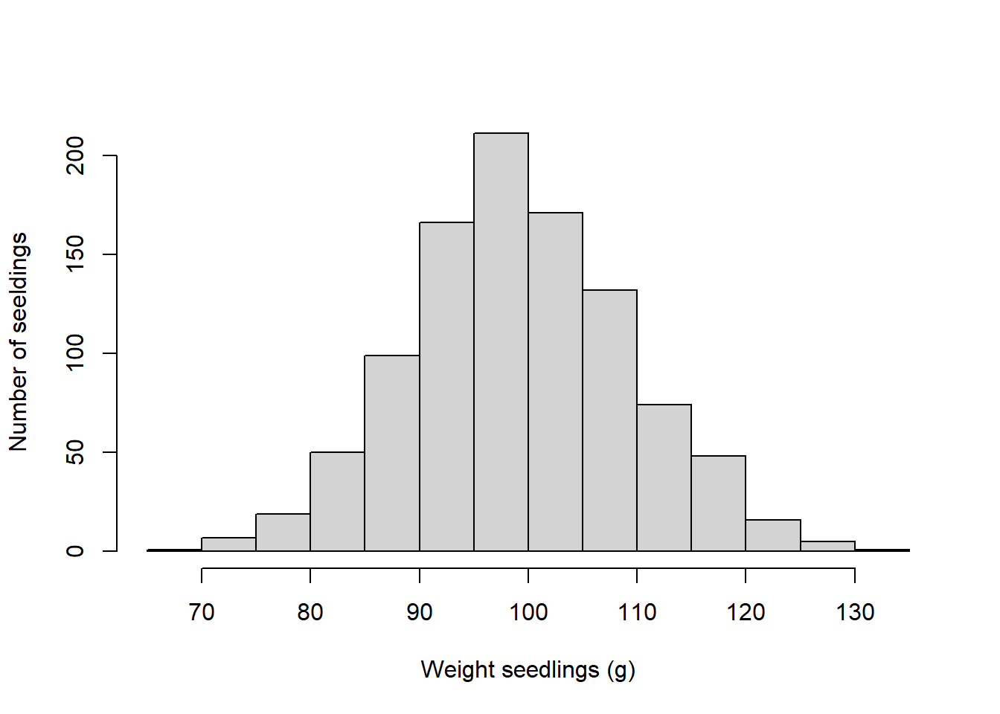
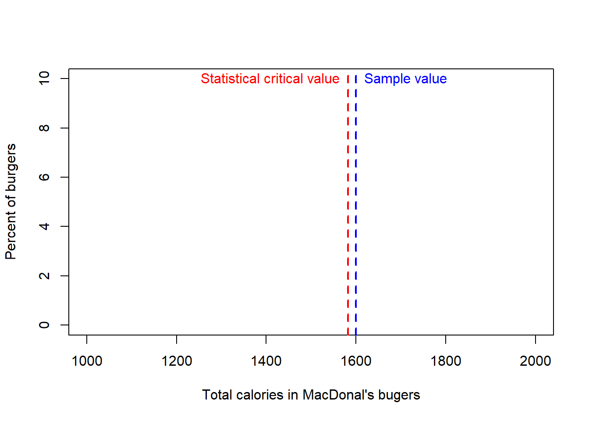

The experiment
The process of developing an experiment to answer a question or test a hypothesis is called “Experimental Design”, and it is full of nuances (commonly called “demonic intrusions”) that could render your entire work meaningless, so designing a good experiment is critical to obtain robust data.
Before we design an experiment, it is important to know several terms.
k
Population, sample, subject
Three important terms for you to know in experimental design are the subject/individual, the sample and the population.
Population refers to every individual of interest. The sample refers to only some of the individuals of interest. When you quantify a given variable in an entire population that is called a census. Any statistic based on an entire population is called “point stimate”.
Drag terms where you think they belong.You need to appreciate that statistics from the samples can vary from sample to sample, whereas statistics from the population are fixed for the given population. For instance, in the figure above, yellow birds represent 1 out of ten birds (i.e., 10% of the sample) in the sample outlined with a solid line. Yet in another sample (outlined with a dotted purple line), out of ten individuals there are two yellow birds (i.e., 20%).
It is important that you appreciate the differences between the sample and the population, because at times those differences is exactly what you want to measure and test. Say you know that the average heart rate of people is 80 beats per minute but yours is 90 beats per minute. Is your rate significantly higher that it is expected? In this case, you can compare your hearths rate to that of the average population. Later on we will study how to test this mathematically.
Variables
In experimental design, the word “Variables” can mean several things, so it is important to be specific.
The dependent variable The dependent variable, for instance, is a characteristic of the individual to be measured or observed. This is also called the “response variable”. In other words, the dependent variable is the attribute of the system you will expect to change, and which you plan to measure. In the case of the restoration hypothesis, it will be the “body size” of the plants.
The independent variable The independent variable is what we will manipulate in the experiment. It can also be called a factor. In the case of the restoration hypothesis, it will be the presence or absence of Mycorrhizae. You can also use different concentrations of Mycorrhiza. Collectively, all the concentrations would be called the independent variable, and each concentration could be call a “level”. Each likely level in the independent variable can also be called a treatment.
Quantitative variable Variables are also used when referring to the type of data you collect. If what you measure in the individuals is numerical (i.e., it can be measured with numbers, for instance, height or weight), it will be called a quantitative variable.
Qualitative variable A qualitative variable describes an individual by placing the individual into a category or group (for instance, male or female).
The control and treatment

Figure 1.11: The population
In experimental design, when testing the effects of a given independent variable, it is important to see what happens to individuals in the absence of the effect of such an independent variable.
Individuals in the group that are not subject to the independent variable are called collectively the “control” group. The groups created by individuals that are exposed to the independent variable are collectively called a “treatment” group.
Any difference in the response variable between the control and the treatment will be attributed to the independent variable.
Say that individuals in the control group were on average 100g, while those on a given treatment were 120g.
From this comparison, you can see that the treatment created a 20% increase in weight.
Of course, not all individuals will have exactly the same weight (the so-call variability), and later on, we will see how to use that variability with statistical methods to determine if such a different is statistically significant or not.
Replication
In experimental design, replication refers to the number of independent individuals in a control or treatment upon which you test your hypothesis. Replication is a critical element in experimental design because it determines the robustness of your conclusion.
Drag terms where you think they belong.
h
In almost any experiment there will be random variation in the response. Thus, an observed difference between the control and treatments could be mistakenly attributed to a cause-and-effect relationship when the source of the difference may just be random variation. In short, the difference may simply be due to the noise rather than the signal. This type of error is affected considerably by the amount of replication you have.
Let’s use an example. If nothing is wrong with a coin, you know that the probably of head or tail is the same at 50%. However, if you test this hypothesis with one replicate, let’s say it landed in tails, then you will conclude that tails occur 100% of the times.
If you try for a second time, and lands on tails again, your conclusion remains the same. If it is heads, now you have to change your conclusion as now either side has a 50% change.
Let’s say you try again, and regardless of where it lands, your probability for either side of the coin now changed to 75%.
You can continue doing this over numerous trials, and eventually the probability will rest at about 50% for either side of the coin, again if nothing is wrong with the coin.
From the example above, you can see how reduced replication can lead to variation in the conclusions.
Let’s review the effect of replication mathematically in an exercise, in which I measured the weight of all 1000 seedlings in my nursery. In this case, I have done a census as I measured every single individual. I plotted the number of seedlings at each weight, obtaining the following figure:

The average weight of individuals in my population was 99.94
Now let’s see what will happen when I take samples of different sizes from that population.

In the figure above, each point is the average of a sample with the number of individuals shown in the x-axis. The red line is the true average of the population.
From the figure above, you can see how samples with fewer number of replicated individuals have much larger variability in the mean weight than samples with more individuals.
Basically, the variability in the samples reduces as I increase the size of replicated individuals. If my population was 1,000 individuals, the closer my sample is to that number, the more accurate the results from my sample.
To better visualize the relationship between the number replicates and variability, let’s do the same take 100 samples at each sample size:

Again, you can see how samples with fewer replicated individuals are more variable than samples with many replicated individuals.
There is not a set number of replicates you should use for an experiment as the optimum depends on the degree of variability in the variable you are measuring. Later on we will quantify the optimum sample size for a given population.
Sample size and replication are confusing terms and could at times be interrelated. Say that you want to compare a group of individuals to population, in this case each individual will be replicated and all together they will be your sample size.
However, if your experiment requires to take multiple samples, each sample with a given number of individuals, then each sample should be treated as independent measures, and in this case, each sample is a replicate.
Remember, a replicate needs to be independent from each other.
Pseudo-Replication
One important assumption when you use statistics is that your replicates have to be independent (i.e., one replicate should not depend on another), and this can be tricky at times.

Figure 1.12: Pseudo Replication
Let’s assume that you want to do an experiment with fishes to see if certain diet is better than other. You already identified that the optimum sample size was 1,000 fish. So, you put 1000 fishes in one aquarium and 1000 fishes in another aquarium, you feed the fish with the different diets, and later on, you measure how heavy the fishes are.
The example above is a typical example of pseudo-replication. You may think you have 1,000 replicates, but in reality you only have one, which is each aquarium with fish.
In this case, the response you find on each fish is not independent as all fishes in one aquarium are equally affected by whatever happens in the aquarium.
Why do you only have one true replicate?. Why data from this experiment be reliable?
There is famous paper by Hurlbert in Ecological Monographs in 1984 that outlines the many things that can go wrong due to pseudoreplication.

Figure 1.13: likely confusions to emerge due to Pseudo Replication
Randomness
Another issue to be mindful of when doing experiments is to ensure that any other variable that you cannot test is applied randomly to the individuals in your experiment.
The effect of variables that you cannot control or that you do not even know are called “demonic intrusions”. Basically, these variables can introduce evil effects to your response variable, but this can be controlled by ensuring you do everything randomly.
Let’s use an example to clarify this.
Let’s image that you are to run an experiment with two treatments, each with 100 replicated aquarium. Say that you put all the aquarium from one treatment on one side of the lab and the other 100 aquarium from the other treatment on the other side of the lab.
What type of demonic intrusion could you think of in this case?
I could image that the side of the lab facing the sun in the morning could be less hot than the aquariums on the other side. May be on one side they get more light than the other. May be there are windows, and thus different airflow, affecting oxygen in the water….this list can go on and on.
All these variables can affect how your fish in the aquarium grow. As a consequence, in your results you may find a difference between fishes from different aquariums that are not due to the diet but to any of these demonic intrusions, resulting from you putting all aquariums of one treatment on one side of the lab, and the other treatment on the other side.
Time to feed could be another non-control variable.. Could fish feed in the morning be less stress than fish feed in the afternoon?.
The list of potential artifacts is long, but any likely effect can be avoided by ensuring that any aspect setting up the experiment is done randomly. For instance, locating the aquariums randomly in the laboratory.
Design experiment
With all considerations above, here are eight rules you need to enforce as you design your experiment (From PeerJ)
1.Begin by identifying a hypothesis for the topic you are interested in. Testable predictions generated will allow you to formulate a hypothesis. The hypothesis is an explanation of how you think a system works based on observation. The hypothesis will be either accepted or rejected based on the data collected.
2.Define parameters for the experiment by being clear and concise in your wording. By clearly defining terms, you can focus in on experimental methods and avoid ambiguity. This ensures that the results will be more accurate and there will be less flexibility in the experimental design, again increasing accuracy (Hurlbert, 1984).
3.Decide if you would like to perform a mensurative or manipulative experiment. A mensurative experiment involves making measurements at different times or in different areas. A manipulative experiment involves physically altering a treatment group, and thus always has two or more treatments (Hurlbert, 1984).
4.Choose an appropriate sample size that is fitting for the results you wish to obtain. Generally, a smaller sample size produces results that are inaccurate for generalization. A smaller sample size will also produce a smaller effect size measure, which is the efficacy of the treatment, and thus should be avoided (Ionnidis, 2005).
5.Introduce a control group. In biology, systems tend to exhibit temporal change, which could be an influencing third variable. In order to isolate any changes to the experimental treatment alone, a control is necessary.
6.Randomize assignment. By randomizing sample units to different treatment groups, experimenter bias is avoided. Randomization is a critical facet of the experimental design as it intersperses the samples being tested (Hurlbert, 1984).
7.Replicate! The number of replicates necessary will vary with design, however it ensures precision in experiments (Oksanen, 2001).
8.Ensure samples are dispersed in space or time to avoid pseudoreplication. This ensures replicates are statistically independent. Often, experimenters will make inferences based on the data collected and quantify samples from the same unit as independent, however in reality the samples come from the same unit, thus it is not a genuine replication (Oksanen, 2001).
i